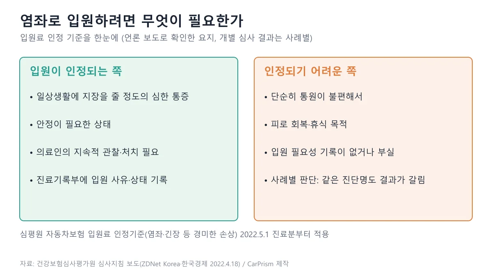
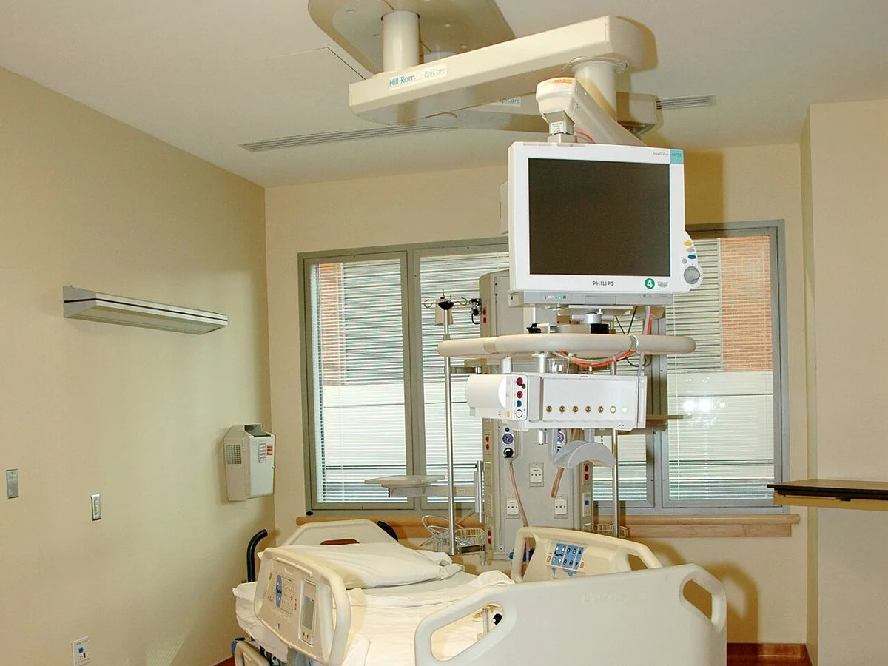
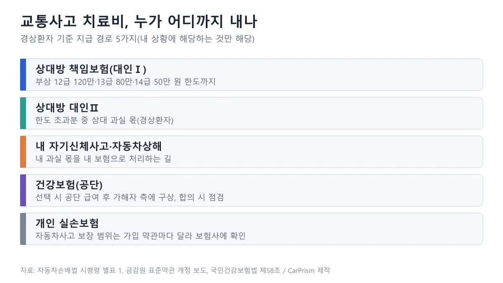
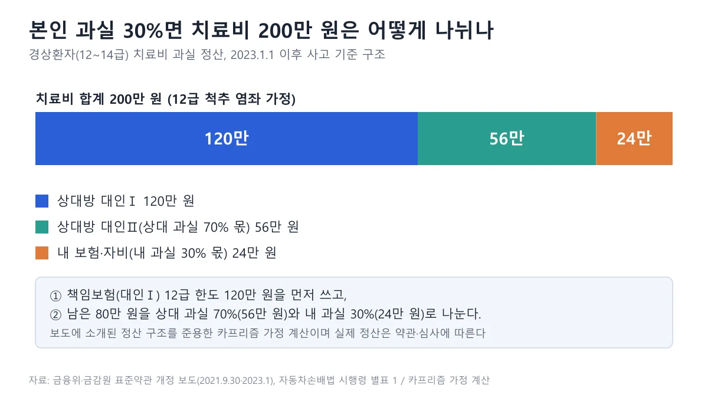
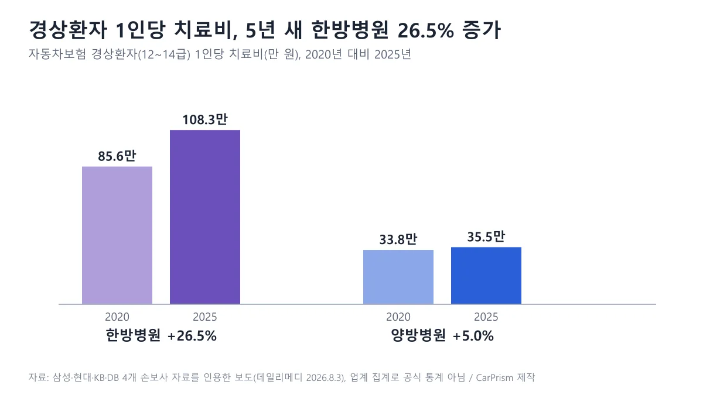
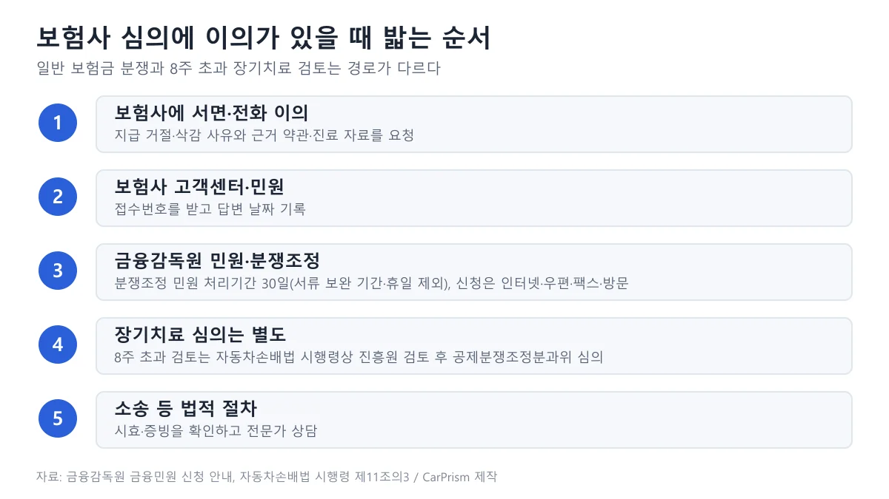

▲ 병원 복도 예시(스웨덴 트롤헤탄 병원 촬영). 국내 자동차보험 입원과 직접 관련 없는 참고 이미지다 ⓒ W.carter / Wikimedia Commons (CC0)
"가벼운 접촉사고인데 목이 뻐근해서 입원까지 하면, 보험사가 이상하게 보는 건 아닐까?" 사고 다음 날 병원에서 입원 권유를 받으면 많은 사람이 이런 걱정부터 한다. 반대로 가해자 쪽은 "상대가 입원을 길게 하면 내 보험은 어떻게 처리되나" 하고 불안해진다.
이 글은 합의금 협상이 아니라 치료와 입원 단계에서 보험사가 무엇을 보고 어떤 서류를 기준으로 삼는지를 정리한다. 경상환자(상해급 12~14급)의 입원 인정 기준, 치료비를 어느 보험에서 내는지, 내 과실이 있을 때의 정산 구조, 한방 진료를 둘러싼 제도 환경, 보험사 심의에 이의를 낼 때의 경로를 공식 자료 중심으로 짚는다.
합의금 서명 전 점검은 합의금 협상 기사에서, 4주·8주 진단서와 향후치료비 개편은 경상환자 향후치료비 기사에서 자세히 다뤘으므로 여기서는 반복하지 않는다. 이 글은 일반 정보이며 의학적 판단이나 법률 자문이 아니다. 개별 사건은 담당 의사와 보험사, 필요하면 손해사정사·변호사와 확인해야 한다.
1. 경상환자 입원은 누가 판단하나 — 의사 소견, 심평원, 보험사의 세 겹
입원 여부는 1차로 담당 의사가 환자 상태를 보고 결정한다. 보험사가 "입원하세요/마세요"를 정하는 것이 아니다. 다만 자동차보험 진료비는 심사 대상이어서, 병원이 청구한 입원료가 인정될지를 건강보험심사평가원(심평원)과 보험사가 사후에 따진다.
경상환자는 시행령상 상해급 12급·13급·14급에 해당하는 환자를 말한다(자동차손해배상 보장법 시행령 제11조 제1항 제5호, 별표 1). 책임보험(대인Ⅰ)의 부상 한도는 12급 120만 원, 13급 80만 원, 14급 50만 원이다. 이 금액은 부상 보험금의 법정 한도이지 합의금이 아니며, 치료비뿐 아니라 휴업손해·위자료 등 부상으로 인한 손해를 합산해 적용되는 한도로 안내된다(급수별 금액은 시행령 2023.5.16 시행분을 인용한 안내 자료 기준이므로 현행 별표는 국가법령정보센터에서 확인하자). 급수별 상해 내용은 앞선 경상환자 향후치료비 기사 2장에 표로 정리했다.
▲ 서울대학교병원 야간 출입구 일대(2014년 촬영). 이 기사의 특정 사고·환자와 무관한 예시 장면이다 ⓒ U2em / Wikimedia Commons (CC BY-SA 3.0)
📍 세 겹 판단을 이렇게 이해하면 쉽다
- 의사: 진찰·영상검사로 상태를 보고 입원 또는 통원 치료를 권한다. 사유는 진료기록부에 남는다
- 심평원: 자동차보험 진료수가 심사기관으로, 입원료 인정기준에 따라 청구를 심사한다
- 보험사: 병원에 지급 의사를 알리고 치료비를 지급하며, 경상환자는 4주가 넘으면 진단서 등을 요청할 수 있다(2023년 약관, 이후 시행령 반영)
한 가지 오해는 짚고 가자. 입원을 했다는 사실만으로 환자를 의심하는 것은 부적절하다. 입원이 필요했는지는 의학적 소견과 기록으로 판단할 일이고, 환자가 병원의 청구 방식까지 책임지는 구조도 아니다.
2. 입원이 인정되는 경우와 인정되기 어려운 경우
심평원은 2022년 4월 교통사고 환자의 입원료와 상급병실료 심사지침을 공개하고 2022년 5월 1일 진료분부터 적용했다. 교통사고 환자의 80% 이상이 경미한 손상이라는 점을 고려한 기준으로, 염좌·긴장 등에 대한 입원료 인정 요건이 핵심이다. 아래는 언론에 공개된 요지를 정리한 것이며, 지침 원문은 확인하지 못했다.

▲ 입원료 인정기준 요지. 같은 진단명이어도 사례별로 판단한다 ⓒ 카프리즘 제작 도표
| 구분 | 입원이 맞는 쪽 | 통원으로 가는 쪽 | 환자가 확인할 것 |
|---|---|---|---|
| 통증·기능 | 일상생활에 지장을 줄 정도의 심한 통증, 안정이 필요 | 통증이 있지만 일상생활과 통원이 가능 | 진단서·진료기록부에 증상과 기능 제한이 구체적으로 적혔는지 |
| 처치 | 의료인의 지속적 관찰과 처치가 필요 | 정해진 시간에 물리치료·약 처방으로 충분 | 입원 중 실제로 받는 처치와 의료진 회진 기록 |
| 사유 | 입원이 필요한 타당한 사유와 임상 소견이 기록됨 | 단순 통원 불편, 피로 회복은 인정되지 않음 | 입원 사유가 병원 사정이 아니라 내 상태 때문인지 |
| 병실 | 일반적으로 4인실 이상이 보험 보장 범위(업계 설명) | 1~3인 상급병실은 격리 필요 등 예외 사유가 있을 때 | 병실료가 보험 처리되는지, 차액이 내 부담인지 |
상급병실료는 감염성 질환 격리처럼 치료 목적으로 필요하거나, 남녀 일반병실이 있는데도 여유 일반병상이 없는 부득이한 병실 사정이 있을 때 인정되는 것으로 보도됐다. 입원할 때 "1인실은 보험이 되나요?"를 병원에 먼저 묻고, 차액이 생기면 서면으로 안내받는 편이 분쟁을 줄인다.

▲ 병실 예시(미국 국립보건원 임상연구센터, 2004년 공개). 국내 자동차보험 입원 기준과 직접 관련 없는 참고 이미지이며 병실 종류·급수는 확정하지 않는다 ⓒ Diane A. Reid / 미국 국립암연구소(NCI) 공개 이미지, Wikimedia Commons (Public domain)
심평원 심사지침은 입원 인력과 시설 요건도 정한 것으로 보도됐다. 입원 중 환자 관리를 의료인이 하지 않는 병원은 입원료 인정에 문제가 생길 수 있고, 이에 의료계가 반발했다는 보도도 있었다. 이런 부분은 환자가 판단하기 어려우므로, 입원 중 불안한 점이 있으면 병원 원무과와 보험사 담당자에게 지급 의사 유효기간과 병실 인정 여부를 함께 확인하는 것이 현실적이다.
심평원 입원료 심사지침 보도 바로가기 지침의 정확한 문구와 시행 이후 개정 여부는 심평원 공지로 확인해야 한다.
3. 치료비는 어느 보험에서 나오나 — 대인Ⅰ·대인Ⅱ·자기신체사고·건강보험
사고 후 병원비 청구서에는 "보험사 처리"라고만 쓰여 있는 경우가 많지만, 내부적으로는 여러 갈래다. 아래 도표와 표는 경상환자 기준으로 어떤 길이 있는지를 정리한 것이다.

▲ 치료비 지급 경로 5가지(상황에 맞는 것만 해당) ⓒ 카프리즘 제작 도표
| 경로 | 누구 보험인가 | 핵심 | 확인 수준 |
|---|---|---|---|
| 대인Ⅰ(책임보험) | 가해 차량 | 법정 부상 한도(12급 120만 원 등) 안에서 치료비 등 지급 | 시행령 별표 1(법령) |
| 대인Ⅱ | 가해 차량의 종합보험 | 대인Ⅰ 한도를 넘는 손해를 보상. 경상환자는 상대 과실 몫만 | 표준약관 개정 보도 |
| 자기신체사고·자동차상해 | 내 차 보험 | 내 과실 몫을 내 보험으로 정산하는 길. 가입 여부·한도는 증권으로 확인 | 보도와 업계 설명, 약관 원문 확인 필요 |
| 건강보험 | 국민건강보험공단 | 건강보험으로 진료받으면 공단이 급여한 뒤 가해자 측에 구상할 수 있음(국민건강보험법 제58조) | 법령 |
| 개인 실손보험 | 내 실손 상품 | 자동차사고 보장 범위는 상품·약관마다 다름 | 약관 확인 필요 |
자기신체사고와 자동차상해는 이름이 비슷하지만 보장 방식이 다르다는 설명이 업계에서 흔하다. 안내 글에서는 자기신체사고가 상해급수별 한도를, 자동차상해가 총액 한도를 적용한다고 소개되지만, 이번에 약관 원문을 열어 보지 못해 확정하지는 않는다. 내 증권의 담보 이름과 한도는 보험증권이나 보험사 앱에서 직접 확인하자.
건강보험을 쓸지 여부도 헷갈리는 부분이다. 국민건강보험법 제58조는 제3자의 행위로 보험급여 사유가 생겨 급여를 한 경우 공단이 그 급여 비용 한도에서 제3자에게 손해배상을 청구할 권리를 얻는다고 정한다. 이미 제3자에게 배상받은 금액이 있으면 그 한도에서는 급여를 하지 않는다는 취지의 규정(제2항)도 있다. 어느 보험으로 먼저 처리했는지에 따라 정산이 달라질 수 있으므로 공단 안내를 확인하자. 국민건강보험법 바로가기
4. 내 과실이 있다면 — 경상환자 치료비는 과실만큼 나눈다
과거에는 과실과 상관없이 상대방 보험사가 치료비를 전액 지급했다. 이런 구조는 과잉진료와 고과실자·저과실자 사이 형평성 문제를 낳는다는 지적이 있었고, 금융위원회와 국토교통부는 2021년 9월 30일 경상환자 치료비(대인Ⅱ) 중 본인 과실 부분은 본인 보험으로 처리하도록 한다고 발표했다. 중상환자(1~11급)는 종전처럼 치료비를 먼저 전액 지급한 뒤 과실 부분을 환수하는 방식이 유지된다고 안내됐다.
이 방식은 2023년 1월 1일 적용된 자동차보험 표준약관에 담겼다. 보도에 따르면 상대방 대인Ⅰ 한도에서 먼저 처리하고, 초과한 치료비는 대인Ⅱ에서 처리하되 본인 과실 부분은 본인 자동차보험(자기신체사고 또는 자동차상해)에서 처리한다. 아래는 보도 예시 구조를 따른 가정 계산이다.

▲ 12급 염좌, 치료비 200만 원, 내 과실 30% 가정 시 정산 구조 ⓒ 카프리즘 제작 도표
| 내 과실 | 상대 대인Ⅰ | 상대 대인Ⅱ | 내 몫(내 보험·자비) |
|---|---|---|---|
| 0% | 120 | 80 | 0 |
| 20% | 120 | 64 | 16 |
| 30% | 120 | 56 | 24 |
| 50% | 120 | 40 | 40 |
과실 20% 사례는 보도의 예시(치료비 200만 원, 상대 184만 원·본인 16만 원)와 일치하고, 30%와 50%는 같은 방식으로 계산한 것이다. 산식은 대인Ⅰ 한도(120만 원)까지는 과실과 무관하게 상대 책임보험이 내고, 초과분 80만 원에 상대 과실 비율을 곱한 금액을 대인Ⅱ가, 나머지(본인 과실 비율분)를 내 보험이나 자비로 처리하는 것이다(30%이면 80만 원 × 30% = 24만 원). 다만 대인Ⅰ 한도에는 휴업손해·위자료 등도 포함되므로 치료비 외 손해가 함께 있으면 치료비 쪽 대인Ⅰ 몫이 줄어 내 몫이 커질 수 있고, 약관 원문 문구는 직접 확인하지 못했다. 실제 금액은 상해급, 치료비, 과실 확정 시점에 따라 달라진다.
📍 이 규칙에서 흔히 놓치는 점
- 과실비율은 나중에 확정되기도 한다. 치료 중에는 병원비를 일단 보험사가 처리하다가 합의 때 정산이 이뤄질 수 있다. 과실 다툼은 과실비율 기사를 참고하자
- 내 보험에 자기신체사고·자동차상해가 없으면 내 몫을 자비로 낼 수 있다. 계약이나 갱신 때 이 담보를 점검해 두자
- 보행자·중상환자 예외는 약관 원문으로 확인하지 못했다. 해당한다면 보험사에 약관 조항을 요청하자
- 이 구조는 치료비 처리에 관한 것이다. 휴업손해와 위자료, 차량 수리비·렌트비의 과실 반영은 별개이며, 렌트 쪽은 사고 렌트 기간 한도 기사에서 다뤘다
금융위·국토부 2021 발표 바로가기 정산 예시는 서울신문 보도에서도 확인할 수 있다. 서울신문 보도 바로가기
5. 한방 진료 — 제도 환경은 달라지는 중이고, 환자가 확인할 것
한방 치료를 선택하는 것 자체는 환자의 권리이고, 한방병원과 한의원의 자동차보험 진료도 제도 안에 있다. 다만 최근 보도에서는 한방 진료비의 증가세가 정책 쟁점으로 다뤄진다.
데일리메디가 2026년 8월 3일 보도한 삼성화재·현대해상·KB·DB손해보험 4개사 자료에 따르면, 경상환자 1인당 치료비는 한방병원이 2020년 85만 6천 원에서 2025년 108만 3천 원으로 26.5% 늘었고, 양방병원은 33만 8천 원에서 35만 5천 원으로 5.0% 늘었다. 2025년 기준 한방병원이 양방병원의 3배를 넘는다. 이는 업계 집계로 보도된 수치이며, 한방과 양방은 진료 범위·치료 내용이 달라 단순 비교만으로 과잉진료를 단정할 수는 없다.

▲ 경상환자 1인당 치료비(2020년 대비 2025년), 4개 손보사 자료를 인용한 업계 집계 ⓒ 카프리즘 제작 도표
같은 보도는 한방병원 외래의 이른바 세트 청구 치료비가 2020년 675억 원에서 2025년 2,534억 원으로 연평균 30.3% 늘었고, 한방병원 1~3인 상급병실 청구액이 2021년 126.7억 원에서 2025년 320.1억 원으로 늘었다고 전한다. 업계는 일부 기관이 1~3인실만 운영하면서 4인실이 있는 것처럼 신고했을 가능성을 제기했는데, 이는 확인된 사실이 아니라 업계의 의심이다.
제도 대응으로는 8주를 넘는 경상환자 장기치료에 필요성 검토를 요구하는 시행령 개정이 있었다(2026년 9월 10일 이후 사고부터 적용, 앞선 경상환자 향후치료비 기사 참고). 한방 진료만을 겨냥한 별도 수가 개편이나 추나·첩약 항목 조정은 이번 조사에서 확인하지 못했다.
✅ 한방 진료를 받을 때 이렇게 해 두면 안전하다
· 치료 내용 확인: 매번 받는 치료 항목과 횟수를 진료기록과 영수증으로 확인한다
· 입원 사유 기록: 입원한다면 증상과 입원이 필요한 이유가 진료기록부에 적혀 있는지 묻는다
· 병실료 사전 확인: 1~3인 상급병실은 보험 보장 여부를 입원 전에 확인한다
· 4주 전 점검: 치료가 4주를 넘길 것 같으면 보험사 안내를 받고 진단서 제출 시점을 병원과 의논한다
· 건강 상태가 우선: 보험 문제 때문에 치료를 줄이거나 늘리지 말고, 증상에 맞는 진료를 우선한다
6. 합의가 늦어지면 — 치료비는 이어지지만 놓치기 쉬운 것들
치료가 길어질수록 합의 시점도 뒤로 밀린다. 합의를 서두를 이유가 없다는 말은 맞지만, 늦어질수록 챙길 서류와 기한이 늘어난다는 점도 알아야 한다.
| 항목 | 왜 중요한가 | 확인 방법 |
|---|---|---|
| 4주 진단서 | 경상환자가 4주를 넘겨 치료할 때는 보험사 안내에 따라 진단서를 내는 것이 원칙으로 안내된다. 제출하지 못하면 지급 의사 기간에 영향이 있을 수 있어 보험사에 확인하자 | 3주 차에 보험사 안내 확인, 병원에 진단서 요청 |
| 7주 자료·8주 심사 | 8주를 넘는 장기치료는 사고일부터 7주 이내 진단서 등 자료 제출과 진흥원 검토 대상(1~11급 중상환자는 제외, 임산부·영유아는 원칙적 제외, 금감원 보도 기준). 2026년 9월 10일 이후 사고부터 적용 | 앞선 향후치료비 기사의 순서 체크리스트 |
| 휴업손해 증빙 | 일을 쉰 날의 소득 증빙은 시간이 지나면 구하기 어렵다 | 급여명세, 재직증명, 사업소득 자료를 미리 모은다 |
| 시효 | 불법행위 손해배상 청구권은 손해와 가해자를 안 날부터 3년, 불법행위일부터 10년이 일반 원칙이다(민법 제766조) | 합의가 길어지면 법률 전문가와 시효 확인 |
| 약관 시행 시점 | 향후치료비 개편(경상환자는 실제 발생 치료비를 치료 종료 시까지 보장, 중상환자는 필요성이 입증될 때 지급)은 개정 약관으로 체결된 계약 중 2026년 10월 25일 이후 보험기간이 시작되는 계약부터 적용된다는 보도(금감원). 2026-10-18 기준 아직 시행 전이다 | 가해 차량 보험의 보험기간 시작일 확인 |
보험사가 치료비 지급 의사를 철회하거나 유효기간이 끝나면 병원이 환자에게 진료비를 청구할 수 있다는 구조는 자동차손해배상 보장법 제12조에 있다(앞선 기사에서 조문 번호를 정리했다). 치료가 필요한 사이에는 병원, 보험사, 환자가 같은 접수번호를 보고 있는지 수시로 확인하는 것이 안전하다.
치료비 외에 합의에서 다뤄지는 위자료·휴업손해·후유장해와 서명 직전 점검 항목은 합의금 협상 기사의 1~6장에 정리돼 있다. 이 글에서는 반복하지 않는다. 향후치료비가 합의가 늦어질수록 커지던 구조는 개편 이후 달라질 수 있으므로, "더 오래 끌면 더 받는다"는 생각만으로 일정을 정하지 말자.
7. 보험사 판단에 이의가 있을 때 — 순서와 "나이롱환자" 표현을 쓰지 않는 이유
보험사가 입원을 인정하지 않거나 치료비를 삭감했다고 해서 곧바로 부당한 것은 아니고, 반대로 보험사 판단이 항상 옳은 것도 아니다. 근거를 요청해서 객관적으로 비교하는 것이 첫 단계다.

▲ 이의 제기 경로. 일반 보험금 분쟁과 8주 초과 장기치료 검토는 경로가 다르다 ⓒ 카프리즘 제작 도표
- 보험사에 근거 요청: 거절·삭감 사유, 적용한 약관 조항, 의료자문 여부를 서면으로 요청한다
- 금융감독원 민원·분쟁조정: 금감원은 분쟁조정 민원을 30일 이내(서류 보완·사실관계 조사 기간과 공휴일·토요일 제외), 기타 금융민원을 14일 이내 처리한다고 안내한다. 신청은 인터넷, 우편, 팩스, 방문으로 가능하고 전화(1332)는 단순 상담에 한한다
- 과실비율 다툼은 금감원이 아니라 생명·손해보험협회가 상담·처리한다고 금감원 안내에 나온다
- 8주 초과 장기치료 검토는 별도다. 진흥원 검토 결과에 이의가 있으면 통지일부터 7일 이내 공제분쟁조정분과위원회 심의를 신청하고, 위원회는 14일 이내 통보한다(앞선 기사 참고)
📍 "나이롱환자"라는 단정은 왜 피해야 하나
- 입원 필요성은 의학적 판단과 기록의 문제다. 같은 염좌여도 통증과 직업·연령에 따라 일상 지장 정도가 다르다
- 보험업계가 문제 삼는 것은 일부 기관의 청구 방식(세트 청구, 상급병실 청구)이지 입원한 모든 환자의 진정성이 아니다
- 반대로 치료 사실이 없는데 입원한 것처럼 꾸미는 행위는 별개의 문제다. 이 글의 대상은 정당하게 치료받는 환자와 그 상대방이다
- 피해자 입장에서 의심받는 느낌이 들면 감정 대응보다 기록과 접수번호로 대응하는 것이 낫다
8. 피해자와 가해자 각각 알아둘 점
| 입장 | 알아둘 점 | 피할 것 |
|---|---|---|
| 피해자(치료받는 쪽) | 입원 사유가 진료기록에 있는지, 4주 전에 진단서가 필요한지, 내 과실 몫 정산 수단(자기신체사고 등)이 있는지 | 보험사 전화로 치료 중단·합의를 압박받으면 즉답하지 말고 서면 요청, 영수증·진단서 분실 |
| 가해자(치료비를 부담하는 쪽) | 내 보험사가 치료비를 처리하며 접수번호로 진행 상황 확인 가능, 대인Ⅱ 한도·형사 합의(운전자보험)와 별개로 확인 | 피해자에게 직접 연락해 치료를 줄이라고 요구하거나 현금 합의를 서두르는 것(보험 처리 영향 확인 필요) |
| 과실이 갈린 쌍방 사고 | 경상환자는 내 과실만큼 내 몫 발생, 과실 확정 때 정산 달라질 수 있음 | 과실 확정 전에 "무조건 상대 전액"이라고 단정 |
가해자 쪽 형사 합의와 운전자보험은 별개로 운전자보험 형사합의금 기사에서 다뤘다. 이 표의 "피할 것"은 공식 기준이 아니라 일반적인 주의사항이다.
9. 이 글에서 확인하지 못한 것
- 심평원 입원료 인정기준 원문과 시행 이후 개정 여부는 확인하지 못했다. 2022년 5월 1일 적용분은 언론 보도로 확인했다.
- 자기신체사고와 자동차상해의 약관상 차이는 업계 설명으로만 확인했고, 표준약관 원문과 한도는 직접 보지 못했다.
- 경상환자 치료비 과실책임주의의 예외(보행자 등)는 약관 원문으로 확인하지 못했다. 2021년 발표문에는 중상환자 제외만 명시돼 있다.
- 한방 진료 수가·추나·첩약 개정 여부와 한방병원 수치의 공식 통계 여부는 확인하지 못했다. 위 수치는 4개 손보사 자료를 인용한 보도다.
- 건강보험 처리 절차 세부(제3자 행위 신고 등)는 확인하지 못했다. 국민건강보험법 제58조는 법령 취지만 적었다.
- 금감원 분쟁조정의 실제 소요 기간과 인용률은 확인하지 못했다. 공식 처리기간 기준(30일)만 안내된다.
10. 요약
경상환자(12~14급) 입원은 담당 의사가 판단하고 심평원과 보험사가 사후에 심사한다. 심평원은 2022년 5월 1일부터 염좌·긴장의 입원료를 "일상생활에 지장을 줄 정도의 심한 통증으로 안정이 필요하고 의료인의 지속적 관찰과 치료가 필요한 경우"에 인정하고, 통원 불편이나 피로 회복은 인정하지 않는다고 보도됐다(2026-10-18 기준).
치료비는 상대 대인Ⅰ 한도(12급 120만 원 등)부터 쓰고, 경상환자는 2023년 1월 1일 이후 사고부터 내 과실 몫을 내 보험이나 자비로 정산한다. 과실 30%, 치료비 200만 원이면 상대 176만 원, 내 몫 24만 원이라는 가정 계산이다. 한방병원 경상환자 1인당 치료비가 5년간 26.5% 늘었다는 업계 집계가 보도됐지만 공식 확정 통계는 아니다.
합의가 늦어지면 4주 진단서, 7주 자료, 휴업손해 증빙, 시효를 챙겨야 하고, 보험사 판단에 이의가 있으면 근거를 요청한 뒤 금감원 분쟁조정(30일, 보완 기간 제외)이나 장기치료 별도 심의를 이용한다. "나이롱환자" 같은 단정은 쓰지 말고 기록과 접수번호로 대응하자. 확인하지 못한 항목은 심평원 지침 원문, 자기신체사고 약관, 보행자 예외, 한방 수가 개정이다.